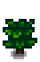

Tea Bush
| Tea Bush | |
| Information | |
| Seed | |
| Growth Time | 20 days |
| Harvest Season | |
| Produces | |
A Tea Bush is a type of bush that grows from a Tea Sapling. It takes 20 days to grow to maturity, after which it will produce one Tea Leaf each day during the last week (22nd-28th) of Spring, Summer, and Fall (and Winter if indoors). One Tea Bush exists inside of Caroline's sunroom, and can also be harvested at the same time as other Tea Bushes (the last week of each season).
An immature Tea Bush grows at any time, even outdoors, even in winter, without watering, the same as fruit trees. As with fruit trees, Tree Fertilizer cannot be used on tea bushes.
Stages
Once planted, neither players nor animals can walk through a Tea Bush at any stage of growth. A mature bush can be chopped down by 2 hits with a Gold or Iridium Axe, but is not vulnerable to other tools. They yield their sapling when chopped.
| Stage 1 | Stage 2 | Stage 3 | Harvest | |
|---|---|---|---|---|
 |
||||
| 10 Days | 10 Days | Until 21st of the season | Total: 20 Days | Continues to produce every day. |
Tips
- It is possible to use tea bushes like permanent fences, to help contain farm animals within a barnyard.
- While you cannot typically place tea bushes outside the farm, you can place Garden Pots and then place tea bushes into them. They will grow and bear leaves as usual, and of course don't need watering.
History
| Trees | |
|---|---|
| Trees | Green Rain Trees • Mahogany Tree • Maple Tree • Mushroom Tree • Mystic Tree • Oak Tree • Palm Tree • Pine Tree |
| Fruit Trees | Apple Tree • Apricot Tree • Banana Tree • Cherry Tree • Mango Tree • Orange Tree • Peach Tree • Pomegranate Tree |
| Seeds | Acorn • Mahogany Seed • Maple Seed • Mossy Seed • Mushroom Tree Seed • Pine Cone • Mystic Tree Seed |
| Fruit | Apple • Apricot • Banana • Cherry • Mango • Orange • Peach • Pomegranate |
| Misc | Large Log • Large Stump • Tea Bush |